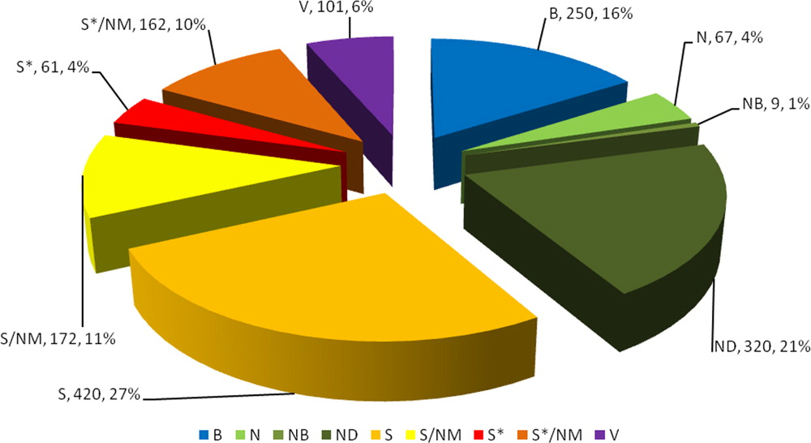

# 3104NSC ## Cycle 3: Drug Design A/Prof. Mark Coster <p> <small> https://mcoster.net / [@MarkCoster_Chem](http://twitter.com/MarkCoster_Chem) </small> </p> <p> <small> [Drug Design - Course Hub](https://teaching.mcoster.net/DDD/) </small> </p> --- ### What can drug design achieve? - Fame? - Fortune? - Altruism? --- ### Fame: Carl Djerassi - "Father of the Pill" <a title="Chemical Heritage Foundation [CC BY-SA 3.0 (http://creativecommons.org/licenses/by-sa/3.0)], via Wikimedia Commons" href="https://commons.wikimedia.org/wiki/File%3ACarl_Djerassi_HD2004_AIC_Gold_Medal_crop.JPG"><img width="256" alt="Carl Djerassi HD2004 AIC Gold Medal crop" src="https://upload.wikimedia.org/wikipedia/commons/thumb/6/62/Carl_Djerassi_HD2004_AIC_Gold_Medal_crop.JPG/256px-Carl_Djerassi_HD2004_AIC_Gold_Medal_crop.JPG"/></a> Chemist involved in development of oral contraceptive pill ??? ### Carl Djerassi - published >1,200 academic papers! - worked in academia & industry - wrote "Science-in-Fiction" novels, poetry, 4 autobiographies - 9 "Science-in-Theatre" plays <iframe width="560" height="315" data-src="https://www.youtube.com/embed/cmHgma1WX58?rel=0" frameborder="0" allowfullscreen></iframe> --- ### Fortune: Lipitor - top selling drug [Lipitor (atorvastatin)](https://en.wikipedia.org/wiki/Atorvastatin) is the highest selling drug of all time - \>$148,744,000 lifetime sales! <div style="justify-content: space-around; align-items: center;"> <a title="Panthro at English Wikipedia [CC BY-SA 3.0 (http://creativecommons.org/licenses/by-sa/3.0) or GFDL (http://www.gnu.org/copyleft/fdl.html)], via Wikimedia Commons" href="https://commons.wikimedia.org/wiki/File%3AAtorvastatin40mg.jpg"><img width="320" alt="Atorvastatin40mg" src="https://upload.wikimedia.org/wikipedia/commons/d/da/Atorvastatin40mg.jpg"/></a>  </div> ??? ### Lipitor A "statin" - used in prevention of cardiovascular disease - lipid-lowering agent - inhibits HMG-CoA reductase <div style="display: flex; justify-content: center; height: 100%; width: 100%;" class='viewer_3Dmoljs' data-pdb='1HWK' data-backgroundcolor='0xffffff' data-select1='chain:A' data-style1='cartoon:color=red' data-select2='chain:B' data-style2='cartoon:color=blue' data-select3='chain:C' data-style3='cartoon:color=green' data-select4='chain:D' data-style4='cartoon:color=magenta' data-select5='resn:117' data-style5='stick'> </div> <small>[Complex of the catalytic portion of human HMG-CoA reductase with atorvastatin](http://dx.doi.org/10.1126/science.1059344) (interactive!) Note: Refresh your browser if this page doesn't look right.</small> --- ### Altruism: HIV/AIDS - USA <figure>  <figcaption> <small>[Source: Centers for Disease Control and Prevention](https://www.drugabuse.gov/publications/research-reports/hivaids/how-does-drug-abuse-affect-hiv-epidemic)</small> </figcaption> </figure> --- ### Altruism: HIV/AIDS - Global <a title="Global HIV/AIDS" href="http://OurWorldInData.org"></a> ??? ### HIV/AIDS: 1987 Australian Ad campaign In 1987, HIV/AIDS posed an enormous public health concern. In Australia, this prompted one of the most controversial (and scary, to those of us alive during the 1980's!) public awareness advertising campaigns of the era: <iframe width="560" height="315" src="https://www.youtube.com/embed/U219eUIZ7Qo?rel=0" frameborder="0" allowfullscreen></iframe> --- ### Altruism: Testicular cancer Before 1960s, metastatic testicular cancer was one of the biggest killers of young men: - **<10%** alive after _1 year_ _Today_, advances in surgery, radiation and especially chemotherapy: - **_>95%_** _cure_ of all patients --- ### Altruism: Malaria next?  ??? ### Malaria: Medicines for Malaria Venture (MMV) Griffith University has strong ties to the [MMV](https://www.mmv.org/):  --- ### Synthesis in Drug discovery - Organic synthesis plays a vital role in modern drug discovery - Despite advances in 'biologics', most drugs are still small, organic molecules (M<sub>w</sub> <900) - If you can't make anything, you can't do anything: _**No-one has ever been cured by a virtual medicine!**_ --- ### Drug Origins 1981-2014 <a title="Natural Products as Sources of New Drugs from 1981 to 2014" href="http://pubs.acs.org/doi/full/10.1021/acs.jnatprod.5b01055"></a>  --- ### Summary: Whether your interest is fame, fortune or altruism, drug discovery allows you to make major global impact > #### Without synthesis, there is > #### no fame > #### no fortune > #### no humanitarian impact!